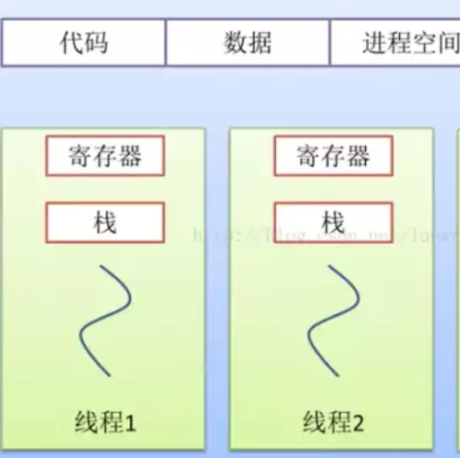
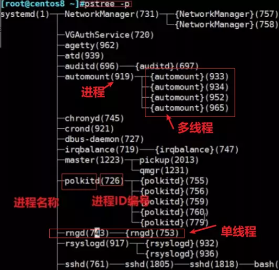
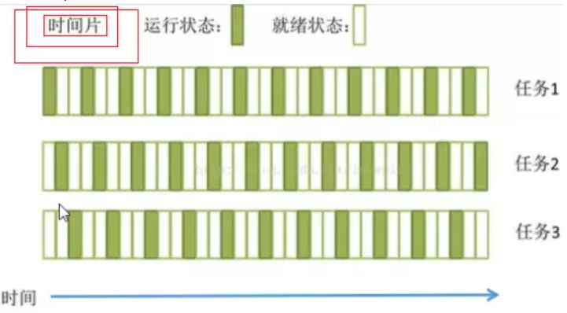
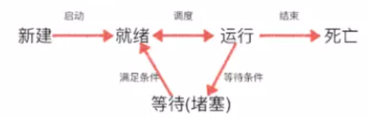
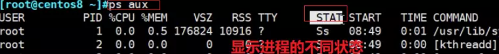
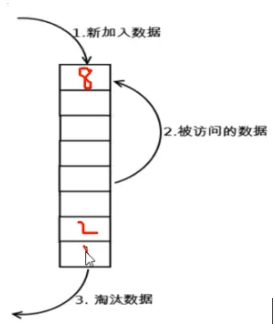
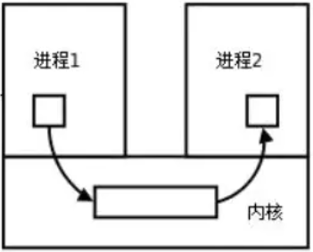
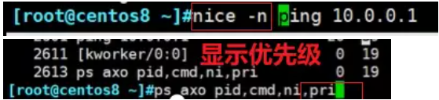
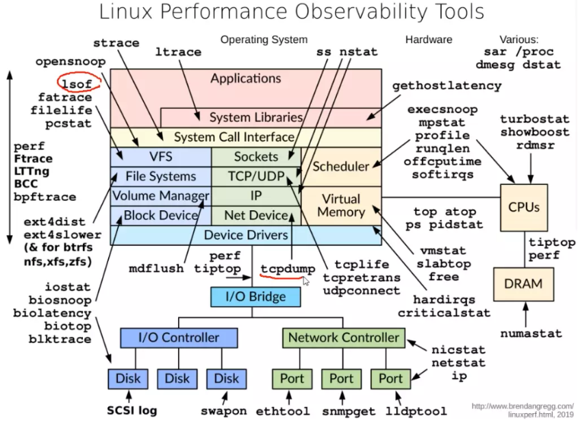
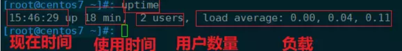

进程和内存管理
🧵Linux进程和内存管理
🎱what 是进程？
内核的功能：
- 进程管理
- 内存管理
- 文件系统
- 网络功能
- 驱动程序
- 安全功能
由此可见进程管理的概念地图，进程管理是属于内核功能管理的一个子集。
进程的定义：
例如操作系统将一个二进制程序进入内核转化为进程。（也就是说：进程是程序运行的另一种状态）（详解：linux 进程管理和内存分配 - 我听过 - 博客园 (cnblogs.com)）
- 多实例*（一个程序可同时运行多个进程
- 进程都有特定的ID用来被标识
- 进程的创建（第一个进程init，后续的父子进程）
- 进程之间有一定的协助关系，同一进程的线程之间存在竞争关系
进程分类：
- 守护进程： 在系统引导过程中启动的进程和终端无关的进程
- 前台进程：与终端相关，通过终端启动的进程
但是上述两者进程可以实现相互的转换。
进程和内存的关系？
进程可以简单理解为一个二进制程序进入内核，而后变成了执行程序：进程。因此，进程是一定占据部分内存的，但是进程对内存的管理方式不一，但大致分为静态和动态的分配和统一回收。
简单理解：进程=线程+（代码+数据）= 协程+（寄存器+栈），进程具体组成部分如下图所示：

线程组成部分，如下图所示：

内存分配
简单概括，进程中包含内存，而进程中的内存分配可拆分如下所示：
- 栈：存放程序临时创建的局部变量
- 堆：存放进程运行中被动态分配的内存段
- BSS：BSS段包含了程序中未初始化的全局变量，在内存中 bss段全部置零
- 数据段：存放可执行文件中已初始化全局变量
- 代码段：存放可执行文件的操作指令

Linux 中的进程？
pstree -p 查看Linux中进程的结构，以及 单进程 和 多进程 进程名称、进程的ID编号以及与线程之间的关系如下图所示：

🔬问题：为什么一颗CPU可以运行多个进程？
时间片：简单理解，cpu将时间分段，分别运行不同的程序。（因为最初电脑的一个cpu一次只对一个程序负责，但是一旦出现程序循环和崩溃的情况，电脑将无法执行下一个程序，故而产生了时间片的概念，均衡分配cpu在每个程序花费时间）

🧶问题：虚拟地址空间 VS 物理地址空间
问题：进程每次运行分配的位置不一样，但为什么每次打开一个程序，内容显示的位置都一致？
🎍整个流程图：应用程序（虚拟地址）——OS（操作系统，CPU中MMU将虚拟地址转化为物理地址）——获取内存，运行程序
- 程序运行在虚拟地址每次都不一样
- 每次程序打开的物理地址位置都是一样的（相当于Doctor Who 每次穿越的时间地址都不一样，但是电话亭内部的空间都一样）
⚾进程使用内存产生的问题
- 内存泄漏
- 内存溢出
- 内存不足
🏉how 进程的整个运行过程：
程序进入内核，进程的整个基本状态和转换，如下图所示：

🎭何为“僵尸态”进程？如何查看“僵尸态”
命令：显示进程的不同状态

1 | |
why 僵死态进程产生的原因？
- 父进程被杀死，子进程无人收拾成为（Z），便成为僵尸态进程。
进程状态的分类
- 运行态
- 就绪态
- 睡眠态
- 停止态
- 僵死态
僵死态造成的危害不言而喻，粗俗理解：站在茅坑不拉屎，尸位素餐浪费进程资源。
how 去除僵死态？
1 | |
🏑LRU算法：删除经常不用的数据
文档：[LRU算法原理解析 - 再见紫罗兰 - 博客园 (cnblogs.com)](https://www.cnblogs.com/linxiyue/p/10926944.html#:~:text=LRU原理. LRU 算法的设计原则是：如果一个数据在最近一段时间没有被访问到，那么在将来它被访问的可能性也很小。. 也就是说，当限定的空间已存满数据时，应当把最久没有被访问到的数据淘汰。. 根据 LRU原理和Redis实现 所示，假定系统为某进程分配了3个物理块，进程运行时的页面走向为 7,1 2 0 3 0 4，开始时3个物理块均为空，那么 LRU 算法是如下工作的：.)

粗暴理解LRU算法，可以将之比喻为 队列 先进先去，喜新厌旧。
📣how 进程之间如何通讯？
IPC-进程间通信
IPC为什么出现？IPC的定义？
- 进程1 和 进程2 交换数据需要在通过内核开辟一个“缓冲区”，进程1把数据从用户空间拷到内核缓冲区，进程2再从内核缓冲区把数据读走，内核提供的这种机制称为进程间通信（IPC，InterProcess Communication）

IPC进程间通讯的不同方式：
可参考文档：进程间通信IPC (InterProcess Communication) - 简书 (jianshu.com)
进程管理工具
进程优先级：
- 系统优先级：1-139，数字越小，优先级越高
- 实时优先级：99-0，数值最大优先级最高
- nice值：-20到19，对应系统优先级100-139
how命令查看优先级：

进程管理命令
可参考文档：linux进程管理：进程，程序，线程 & 9个进程管理工具 & 作业控制 - 云+社区 - 腾讯云 (tencent.com)

⛳问题：如何找到未知进程的执行程序文件路径？
1 | |
进程和CPU之间绑定命令
\#taskset --help
查看进程编号
pststat
可用 nice -n -10 ping 地址 对进程优先级的调整 ，然后再查找进程
1 | |
**uptime ** 负载（5min，10min，15min）：负载最好不要超过5，不然系统中则出现了消耗非常大的进程。

本博客所有文章除特别声明外，均采用 CC BY-SA 4.0 协议 ，转载请注明出处！